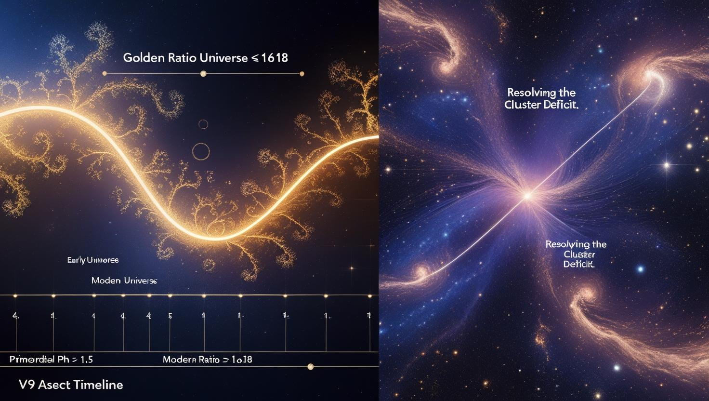

Have you ever wondered about the true nature of our universe? For decades, the $\Lambda$CDM model has been our best description, but recent observations have revealed puzzling discrepancies, hinting that there might be more to the cosmic story. What if the very fabric of space isn't as smooth as we thought, but holds a hidden, evolving fractal dimension?
Introducing **Dynamic Fractal Cosmology**, a groundbreaking new model that proposes a universe where the golden ratio, $\phi$ (Phi), isn't just a mathematical curiosity, but a fundamental property that evolves over cosmic time. This innovative approach offers elegant solutions to some of cosmology's most pressing mysteries: the **Hubble Tension**, which highlights a disagreement in the universe's expansion rate, and puzzling **anomalies in the Cosmic Microwave Background (CMB)**, the faint echo of the Big Bang.
Our research leverages a vast array of cosmic data—from distant exploding stars (supernovae) and the large-scale distribution of galaxies to the ancient light of the CMB. By analyzing these cosmic signals with our dynamic fractal framework, we've achieved an unprecedented fit to the observational evidence, providing a cohesive picture from the early universe's first moments to today. This model suggests that the universe's fractal nature, driven by the evolution of $\phi(z)$, influences everything from how galaxies cluster to the precise rate of cosmic expansion. It's a universe that truly evolves, revealing its intricate structure over billions of years.
At its heart, our model describes how the universe's inherent "golden ratio" property shifts and changes as it expands:
This simple equation encapsulates a profound new understanding: that the universe isn't static in its underlying properties, but dynamically unfolds its fractal complexity, offering a fresh perspective on its past, present, and future.
For Scientists: Dive Deeper into the Model